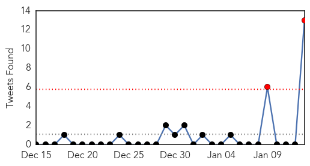
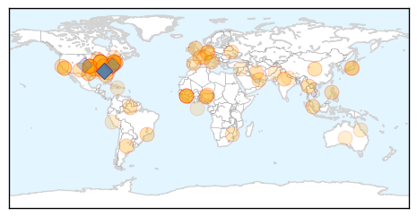
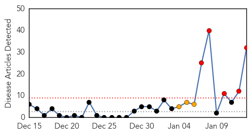
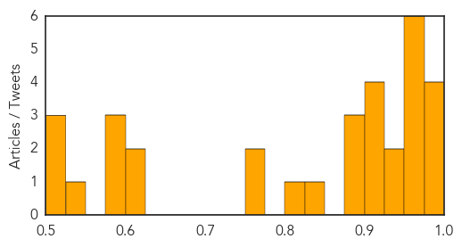

Unknown
30-Day Web Trend
0 alerts, 0 warnings

30-Day Twitter Trend
2 alerts, 0 warnings

Article Locations
Article Confidences

Top Articles:
- 0.997
- Bad Flu Season Continues to Take Toll, Especially Among the Young and Old
- 0.993
- Universal flu vaccine that protects against all strains is 'closer to reality'
- 0.993
- CRMC Registered Nurse Talks Facts to Calm Hysteria Over H3N2
- 0.987
- 7 flu-related deaths confirmed in Onondaga County
- 0.984
- Flu cases widespread in Kentucky nursing homes
- 0.976
- Flu cases causing stricter visitation policy at Beaufort Memoria
- 0.968
- New York City investigates spike in Legionnaires' disease
- 0.968
- 5 Deaths From Flu In New Mexico
- 0.953
- Flu in the Community Reduced by Vaccinations in School
- 0.942
- Health department: Arkansas flu deaths increase to 17
- 0.937
- Officials admit govt apathy to fight eye disease
- 0.926
- Flu test with antiviral treatment introduced at Alberta pharmacies
- 0.920
- 126 Cases of Guinea Worm Disease Remain Worldwide
- 0.917
- Chicago Tribune
- 0.917
- Chicago Tribune
- 0.917
- Chicago Tribune
- 0.917
- Chicago Tribune
- 0.917
- Chicago Tribune
- 0.917
- Chicago Tribune
- 0.917
- Chicago Tribune
- 0.917
- Chicago Tribune
- 0.917
- Chicago Tribune
- 0.917
- Chicago Tribune
- 0.917
- Chicago Tribune
- 0.917
- Chicago Tribune
- 0.917
- Chicago Tribune
- 0.917
- Chicago Tribune
- 0.917
- Chicago Tribune
- 0.917
- Chicago Tribune
- 0.917
- Chicago Tribune
- 0.917
- Chicago Tribune
- 0.917
- Chicago Tribune
- 0.917
- Chicago Tribune
- 0.917
- Chicago Tribune
- 0.917
- Chicago Tribune
- 0.917
- Chicago Tribune
- 0.917
- Chicago Tribune
- 0.917
- Chicago Tribune
- 0.917
- Chicago Tribune
- 0.917
- Chicago Tribune
- 0.917
- Chicago Tribune
- 0.917
- Chicago Tribune
- 0.917
- Chicago Tribune
- 0.917
- Chicago Tribune
- 0.917
- Chicago Tribune
- 0.910
- The world windows to Thailand
- 0.900
- Jimmy Carter's Work to Defeat Guinea Worm Highlighted in New Exhibit
- 0.869
- Visiting Angels working to help seniors fight the flu
- 0.866
- US shared travel history of suspected Paris attackers with French-White House
- 0.860
- Scores in Kyiv infected by tap water
Showing top 50 articles...
Top Tweets:
- 0.905
- .@MyPhillyLife T6 Antibodies created through vaccination with one flu virus can cross-protect against different flu viruses. abcDRBchat
- 0.817
- T6 If the flu viruses circulating are very different from the vaccine viruses, the flu vaccines won’t work as well. abcDRBchat
- 0.745
- U.S. flu activity is widespread. If flu is circulating, it’s not too late to getafluvax. Take antivirals if you get flu.
- 0.737
- T5 Treatment w/ flu antivirals is recommended for ppl at high risk of serious flu complications & ppl sick w/ flu http://t.co/aUgDez7fCv
- 0.696
- Hong Kong says China has reported 460 H7N9 flu cases since the virus emerged. @WHO doesn't release tallied numbers. http://t.co/rZXge9n7FM
- 0.682
- Flu activity is high across most of the country w/ flu illnesses, hospitalizations & deaths elevated. It is not too late for a fluvax.
- 0.665
- T4 If you are at high risk from flu, don’t ignore flu symptoms! Seek medical attention promptly http://t.co/iXrIFbsgRs abcDRBchat
- 0.633
- T2 Flu infects millions of ppl every flu season and causes an est 200,000+ hospitalizations each yr. ABCDRBCHAT
- 0.618
- It's okay to treat w/o waiting for flu lab test results in high risk ppl w/ suspected flu abcDRBchat
- 0.597
- RT: Current Flu Vaccine May be Better Than Many Think, Says Loyola Infectious Disease Specialist http://t.co/MksXpRocpU
- 0.595
- H9N2 is just a normal flu virus in poultry. Rarely infect us; not airborne transmission in humans.
- 0.583
- RT: T2 Flu infects millions of ppl every flu season and causes an est 200,000+ hospitalizations each yr. ABCDRBCHAT
- 0.583
- RT: T2 Flu infects millions of ppl every flu season and causes an est 200,000+ hospitalizations each yr. ABCDRBCHAT
- 0.554
- T3 Anyone can get sick w/ flu, but certain ppl are high risk for serious complications from flu. http://t.co/7EIi3IMF1U abcDRBchat
- 0.554
- .@abcDrBchat Prelim vaccine effectiveness (VE) estimates for the 2014-15 flu season are expected later this wk abcDRBchat
- 0.514
- All flu viruses are RNA viruses but not retroviruses. preppertalk
- 0.509
- People should still get flu vaccination if they have not yet this season. Vaccination is the best way to prevent flu. abcDRBchat
Measles
30-Day Web Trend
5 alerts, 3 warnings

30-Day Twitter Trend
0 alerts, 0 warnings

Article Locations

Article Confidences
Top Articles:
- 0.988
- Several in El Paso County quarantined due to measles exposure
- 0.986
- While recent reports of possible measles in Wayne proved unfounded, disease remains a danger
- 0.981
- More cases of measles linked to Disney theme parks
- 0.979
- Disneyland measles cases raise health concerns
- 0.968
- California confirms 26 measles cases linked to Disneyland
- 0.964
- Number of measles cases in outbreak linked to California Disney themes parks jumps to 26
- 0.963
- California Measles Outbreak Linked To Disneyland
- 0.956
- Disneyland measles outbreak: Infected man took 2 flights before diagnosis
- 0.956
- Disneyland measles outbreak: Infected man took 2 flights before diagnosis
- 0.953
- New Measles Case Confirmed in San Diego County
- 0.928
- 1,000 free measles shots available Friday
- 0.927
- UPDATE: Measles Cases Linked To Disney Theme Parks Spread
- 0.925
- Health Department schedules measles vaccination clinic In Mitchell
- 0.919
- Disneyland measles outbreak spreads to 22 cases statewide
- 0.918
- Measles cases linked to Disneyland leap to double digits
- 0.908
- Northern Voices Online California measles outbreak has its ‘genesis’ in Disneyland
- 0.892
- Health Officials Distributing Measles Vaccines In Mitchell
- 0.885
- Measles alert for Brisbane's southside
- 0.879
- Shopper sparks measles outbreak fears
- 0.849
- Disneyland Measles Outbreak Spreads in Four States
- 0.822
- 26 measles cases linked to Disneyland outbreak
- 0.768
- Disney measles outbreak reaches 26 cases in four states
- 0.758
- South Dakota hosting measles vaccination clinic following outbreak
- 0.620
- 26 measles cases reported with ties to Disney theme parks in US
- 0.606
- 26 measles cases in 4 states now reported with ties to Disney theme parks
- 0.596
- 26 measles cases reported with ties to Disney theme parks
- 0.587
- 26 measles cases reported with ties to Disney theme parks
- 0.587
- 26 measles cases reported with ties to Disney theme parks
- 0.544
- 26 measles cases reported with ties to Disney theme parks
- 0.514
- Measles outbreak tied to visits to Disney theme parks in Califor - KULR8.com
- 0.514
- Measles outbreak tied to visits to Disney theme parks in Califor
- 0.503
- Niger: Massive food-aid project for people fleeing conflict in Nigeria
Top Tweets:
-
No tweets found for Jan 13, 2015